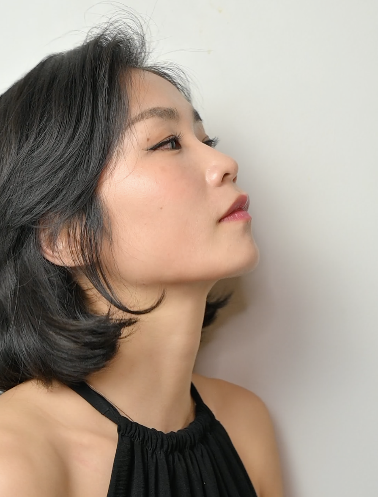

Journalist
Joohong Jung is an actor and a journalism student at Hunter College,
where she is currently
enrolled in the online course Web Production 1 with Professor Laura Splan.
Joohong Jung is an actor and a journalism student at Hunter College,
where she is currently
enrolled in the online course Web Production 1 with Professor Laura Splan.